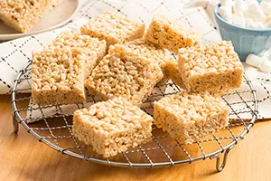

Rice Crispy Square

This Classic, delicious snack has been making memories for kids and parents alike for generations
- 3 Tablespoons of butter
- 1 package (10 oz., about 40) JET-PUFFED Marshmallows
OR
- 5-1/2 cups JET-PUFFED Miniature Marshmallows
- 6 cups Kellogg's Rice Krispies cereal
- In a large saucepan melt butte rover low heat. Add marshmallows and stir until completely melted. Remove from heat
- Add KELLOGG's RICE KRISPIES cereal. Sir until well coated
- Using buttered spatula or wax paper evenly press mixture into 13 x 9 x 2-inch pan coated in cooking spray. Cool. Cut into 2-inch squares. Best if served the same day
← Return to Main Page